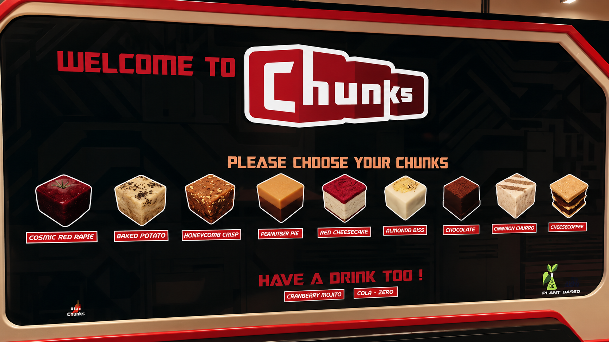
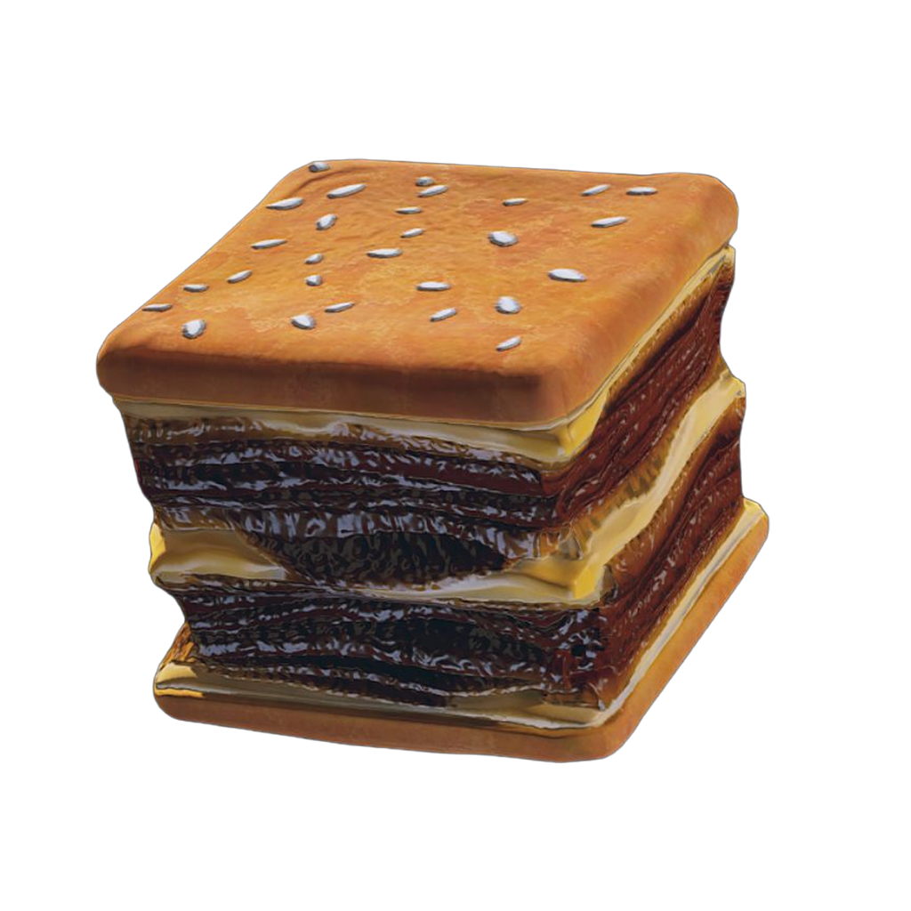
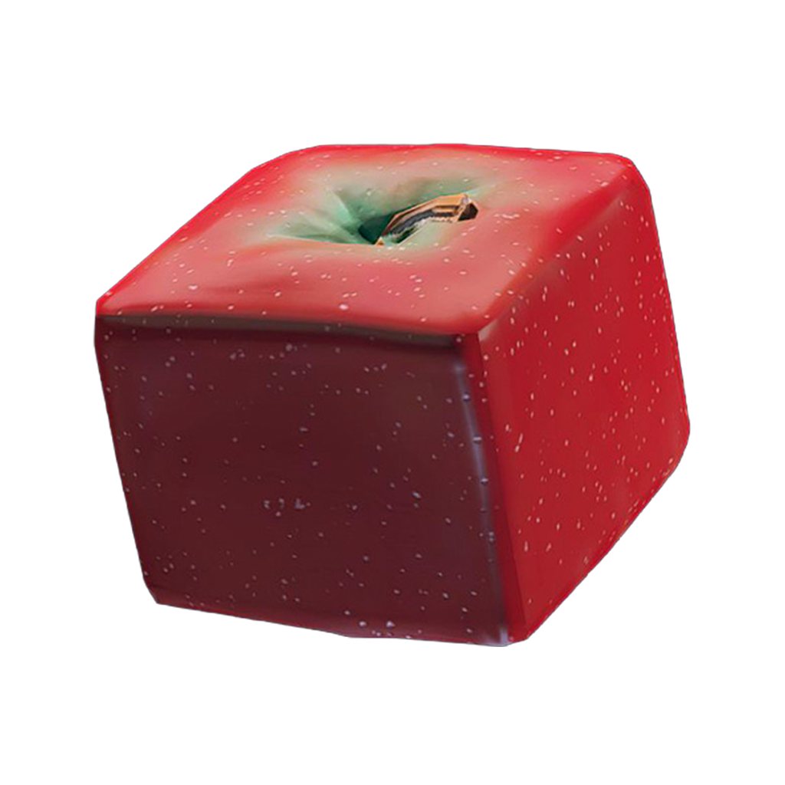
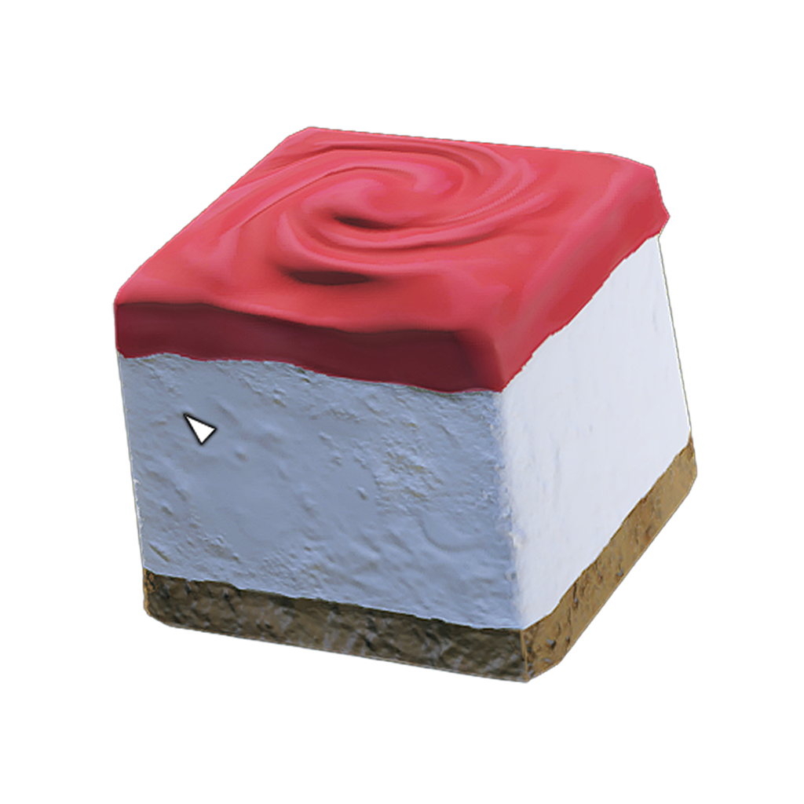

///CHUNKS\\\
In Starfield, Chunks is a brand of food products in the Settled Systems. Its main product, the titular Chunks, are small artificial cubes made to resemble various foods and beverages. Chunks was founded by entrepreneur Fred Blombart, who built the company on the philosophy that most people did not care what they ate, as long as it was tasty and filling. The Chunks production process is a tightly-kept secret, to the extent that even most Chunks employees do not know how Chunks are made. Chunks products and fast food restaurants soon became ubiquitous throughout the Settled Systems.



